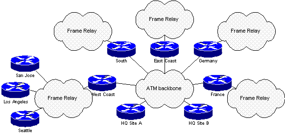

The exercise is part of case study describing AppleTalk routing in Frisco Systems network shown below:

Propose a new
AppleTalk routing design that will reduce the EIGRP diameter without
increasing the load on low-speed access-layer links.
The only way to reduce EIGRP diameter in AppleTalk network is to introduce another routing protocol in the network. As the load on low-speed links shall not increase, the new routing protocol has to be introduced in the ATM backbone. Since AppleTalk implementation of EIGRP does not support several EIGRP processes, only RTMP or AURP are a viable alternative. The new routing design would therefore be:
Please refer also to the section "Case study solution" in Chapter 11 for additional design details and router configurations.